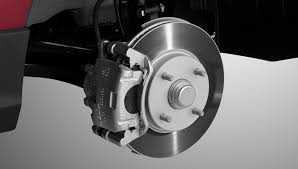
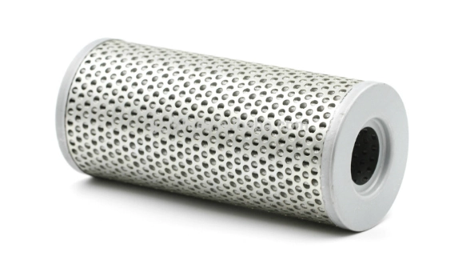
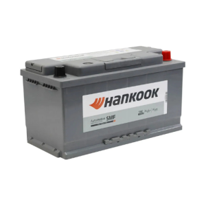
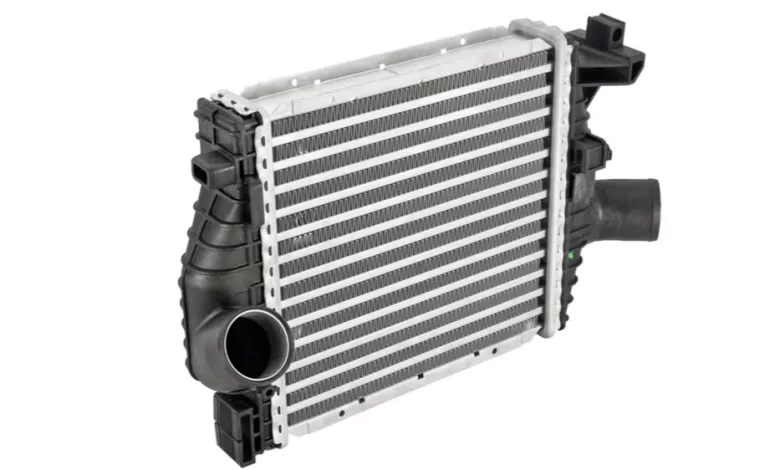
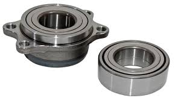
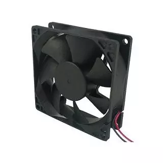

Produk Kami

Rem Mobil Berkualitas
Kampas rem dan cakram mobil dengan bahan terbaik untuk keamanan berkendara.

Filter Oli Kapal
Filter oli kapal tahan lama untuk performa mesin yang optimal dan tahan air laut.

Aki Kapal Tahan Lama
Aki khusus kapal dengan daya tahan tinggi untuk kebutuhan kelistrikan di laut.

Pompa Air Kapal
Pompa air berkualitas tinggi untuk kapal dengan efisiensi dan daya tahan maksimal.

Mesin Diesel Kapal
Mesin diesel tangguh dan hemat bahan bakar untuk kapal niaga dan nelayan.

Radiator Mobil
Radiator berkualitas tinggi untuk sistem pendinginan kendaraan Anda.

Gearbox Kapal
Sistem transmisi kapal dengan performa dan efisiensi tinggi.

Bantalan Roda
Bantalan roda tahan lama untuk kendaraan berat dan kapal industri.

Kipas Pendingin
Kipas pendingin efisien untuk sistem mesin kapal dan kendaraan darat.